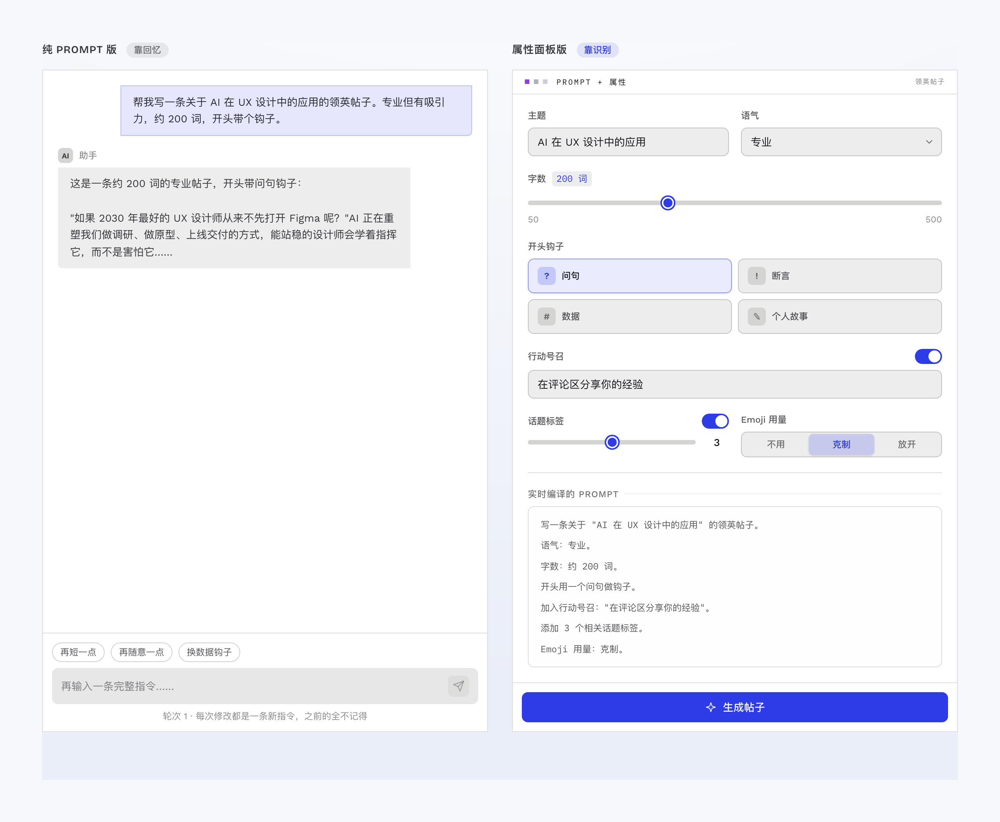
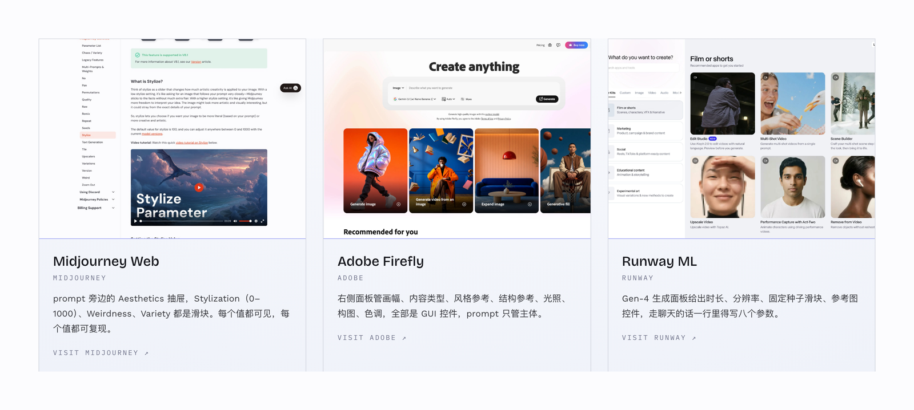
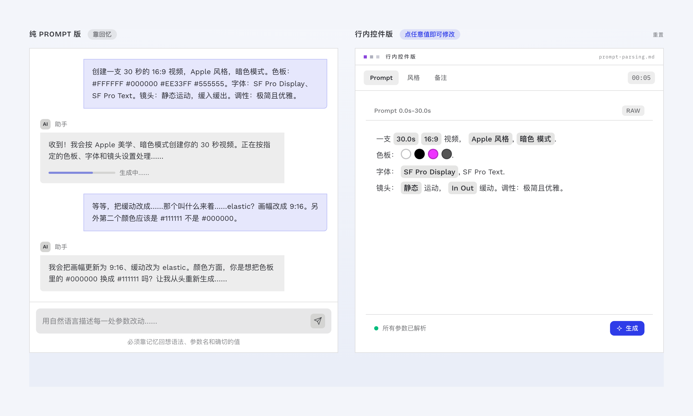
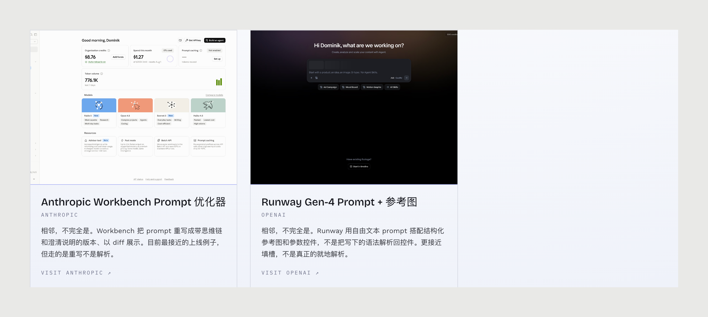
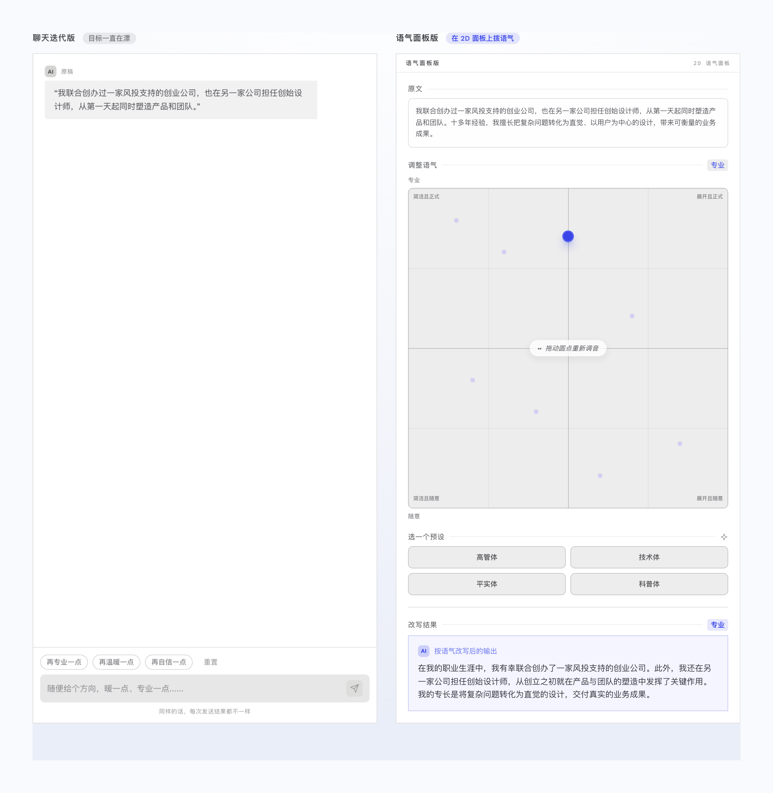
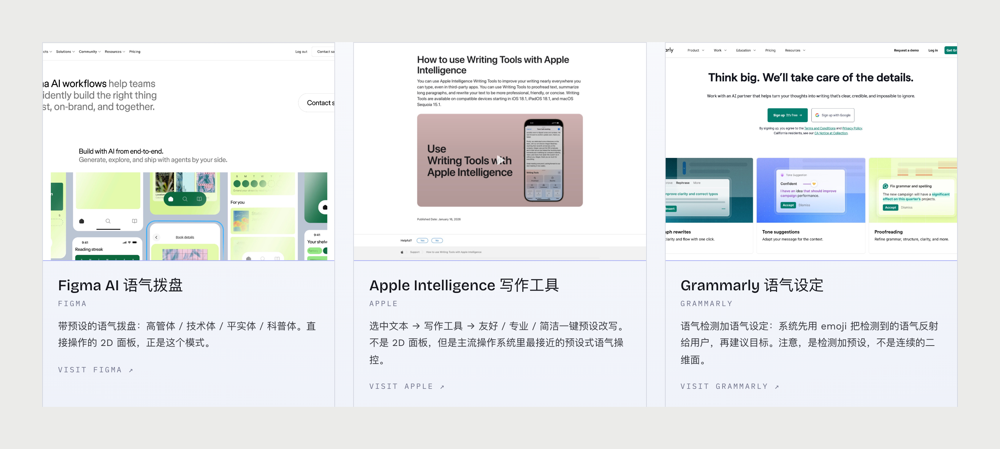
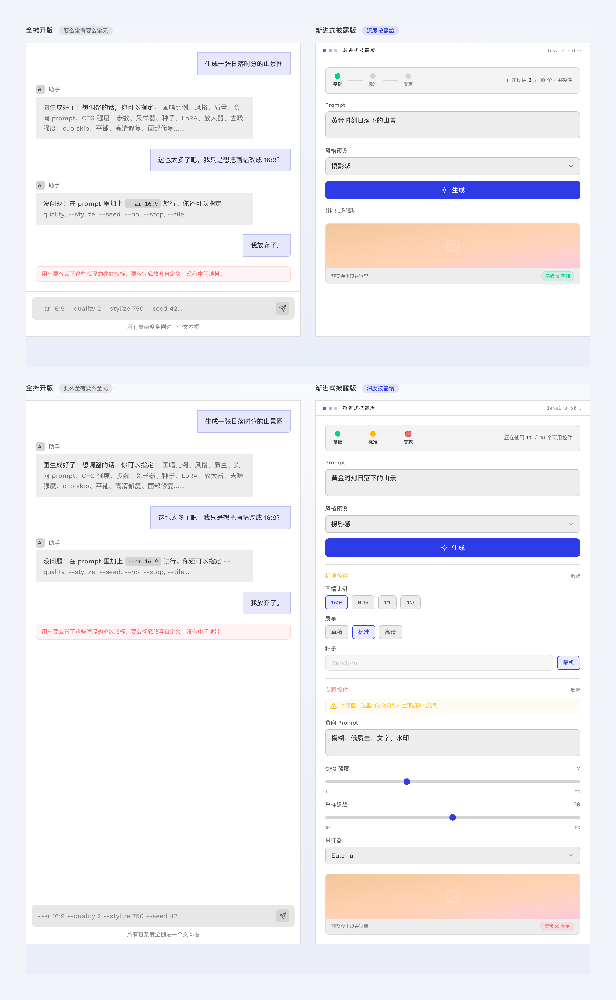
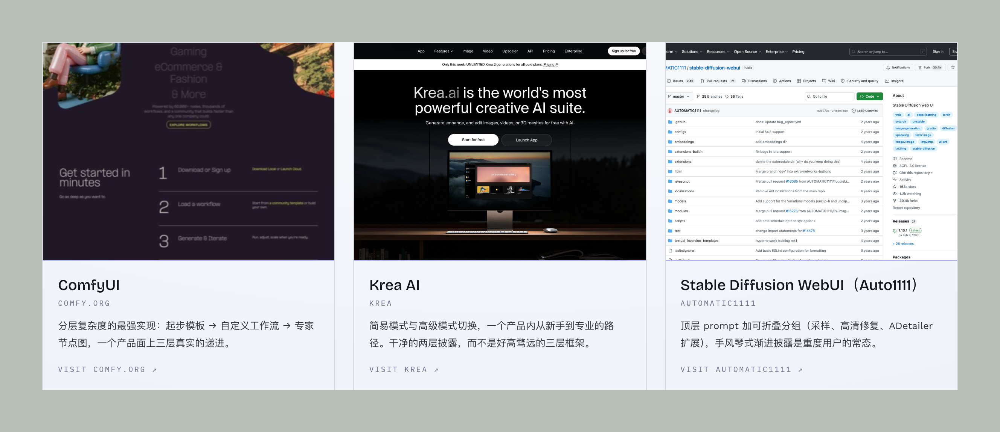

大部分主流 AI 功能围绕生图、生视频、生文案这一类场景而设计，与 AI 交互的方式仍然是输入框为主，用户需要输入一段长 prompt，输入可以概括为两种性质：意图和配置。比如："生成一份 7 月份 Gemini 在 AI 领域的设计总结报告文档"，这段 prompt 里，意图是：生成一份 Gemini 的设计总结；配置是：7 月份的时间范围、AI 领域的限定、报告文档的产出形式，两类信息混在同一段文字里发出去。
这类重复高频的任务不变，但是意图会变化，配置可能调好一次就想让它一直是那样；下次要生成，改一个设置就需要整段重写，想单独改某一个参数，也还是得用解释一通，并且要加上其他限制。
如果不用纯文字的聊天框呢？把 prompt 里高频微调的那部分拿出来，变成看得见、可复现的参数控件。
把配置从 prompt 里拆出来
尤其在生成文案的需求场景下，prompt 格式相对固定，每次写一大段自然语言发出去，每改一处就得整段重写一遍，而且模型两次读出来的意思不一定一样。参数再多一点，就像 Midjourney 那样使用 "--ar 16:9 --stylize 500" 的参数词，而且这些 -- 开头的参数还得记得很清楚才行。属性面板的解法是把配置拆出来放进旁边的面板：文本 prompt 只描述内容，形式交给 GUI 控件。

比如写领英帖子的方案对比，右边面板版的页面构成是主题输入框、五档语气（从专业到叙事）、字数滑块（50 到 500 词）、四种开头钩子（问句、断言、数据、个人故事）、行动号召开关、话题标签数量、emoji 三档；下面一块预览区域，实时把这些控件编译成一段完整 prompt。对比的结论一句话就够："同一个模型，同一个任务，不同的界面。"
每个控件对应编译后 prompt 里的一行，一调就实时更新，发送之前就能看到究竟会发出去什么。这个规则是这个模式成立的前提，控件跟 prompt 之间得是一一对应的映射。这套做法的出处是 Nielsen 那条"识别优于回忆"（Recognition over Recall），别让用户去记界面本可以直接展示给他的语法。
真实案例有三个：Midjourney Web 的 Aesthetics 抽屉，Stylization 0 到 1000、Weirdness、Variety 三个滑块；Adobe Firefly 的右侧面板管画幅、风格参考、光照、构图、色调；Runway ML 的生成面板给时长、分辨率、固定种子和参考图，这些要是用聊天框，一行里得写八个参数，写作成本实在很高。风险在于控件太多、默认值和分组又弱的话，会信息过载。

行内 prompt 控件走的是另一条路：就地解析。从写下的整段描述 prompt 里检测出变量，实时变成可点的控件，悬停显示类型和取值范围，文本仍然是唯一信息源，而不用转换成模板表单。比如一段视频生成 prompt：一支 30 秒的 16:9 Apple 风格暗色视频，字体 SF Pro，静态镜头带缓动，这些参数值全都可以被解析成可点击的高亮态。

这个模式难点很多，最大的难点是解析的可靠性，糟糕的解析会发明出并不存在的结构，让整个产品系统显得更加不可靠。所以实现这个确切的解析动作的产品很少，类似的做法也有，Anthropic Workbench 的 prompt 优化器走的是重写，Sora 2 的多轨 prompt 走的是填槽。

把语气从形容词换成坐标
语气面板这个模式解决的是改文风。仅靠多轮聊天循环来调试写作风格，是模糊的、慢的、重复的，像"稍微专业一点"这样的说法，既含糊又容易引起歧义。
比如拿一段设计师介绍当原文 prompt，用一块语气调试的四象限面板来调试，四个象限分别是简洁且正式、展开且正式、简洁且随意、展开且随意，拖动调试点，改写稿在旁边实时更新；调试预设 4 个常用模式：高管体、技术体、平实体、科普体。

真实产品里有 Figma AI，语气拨盘带 Executive、Technical、Basic、Educational 四档预设。Apple Intelligence 的写作工具（Writing Tools）是选中文本后 Friendly、Professional、Concise 一键 chip，算主流操作系统里最接近的预设式语气操控；Grammarly 是先用 emoji 把检测到的语气反射给用户、再给目标预设，检测加预设。

风险是少量的轴会把语气简化过头，精确度不太好控制。两个轴四个象限，看着很科学，可实际上正式度和简洁度并不正交，一段话越正式往往也越长。坐标给出的是一个可复现的位置，未必是一个准确的位置。
语气面板和属性面板可以追溯到同一篇论文，Ben Shneiderman 1983 年发在 IEEE Computer 上的《Direct Manipulation: A Step Beyond Programming Languages》，直接操作对命令行抽象的那场论证；从整段 prompt 走向可控界面的这批模式，就是把这个论证套用到 LLM 的输入输出上。
控件多了就分层披露
前面两个模式做下来会撞上一个新问题，控件全露出来，选择复杂度就大了。采用渐进式披露处理。AI 工具给新手和专家看同一个界面，既不能把所有控件一次倒给新手，又不能把深度功能埋进聊天语法里，因为新手根本不会全部都探索了。
没有可见路径，是聊天框最大的门槛。一个 GUI 工具，哪怕功能藏得再深，至少能靠乱点把它翻出来；prompt 框里的高级用法翻不出来，只能等别人告知，或者刷到某条推文。
把所有控件分三档，基础（Essential）、标准（Standard）、专家（Expert），基础档只有 prompt 和风格预设；展开标准档多出画幅、质量、种子；再进专家档是负向 prompt、CFG 强度、采样步数、采样器。

ComfyUI 是这个模式的最强实现案例之一，分类从起步模板到自定义工作流再到专家节点图一共三个梯度；Krea AI 是简易和高级两档切换，干净的两层披露；Stable Diffusion WebUI 用的是可折叠的手风琴分组。风险也有两层：披露太保守，重要能力可能一直没人发现；过度分层的框架，很少跟产品心理预期匹配。

这四个模式里，属性面板和渐进式披露早就用在 Midjourney、ComfyUI 、生视频的这些专业级别工具里，行内 prompt 控件还停在研究型模式，最难的是语气面板。
2004 年有篇文章《Ten Challenges for Making Automation a "Team Player" in Joint Human-Agent Activity》，讲的是人和自动化系统怎么当"队友"。里面有一句话，二十多年后拿来看今天的 AI 界面依然成立：只有能够准确预测其他人会做什么，规划自己的行动才成为可能。
本文四个模式的内容、原型描述与产品案例来自 Beyond Chat 站点的 Property Panel、Inline Prompt Controls、Progressive Disclosure、Tone of Voice 四个模式页。